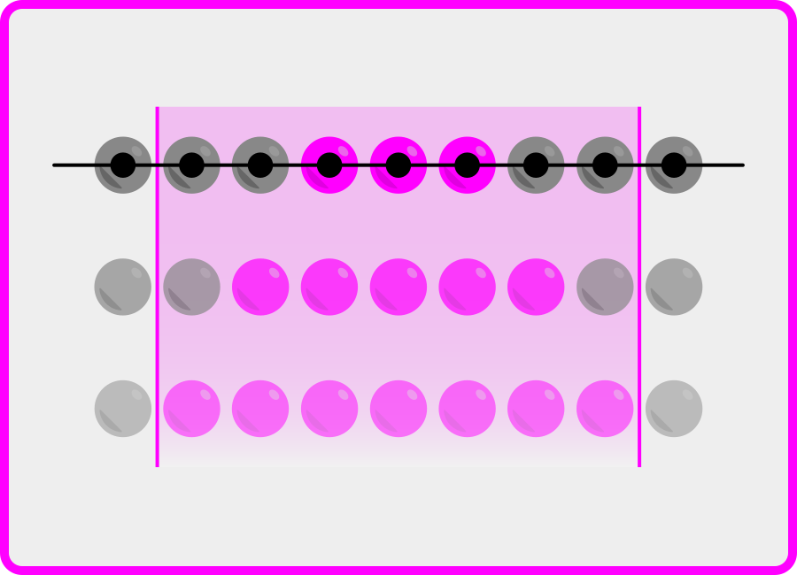
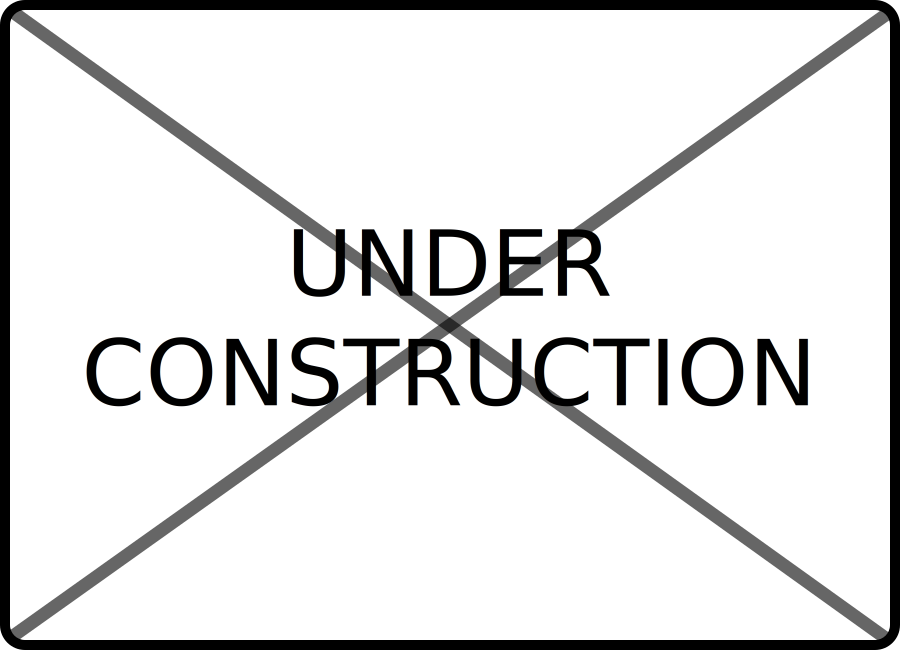
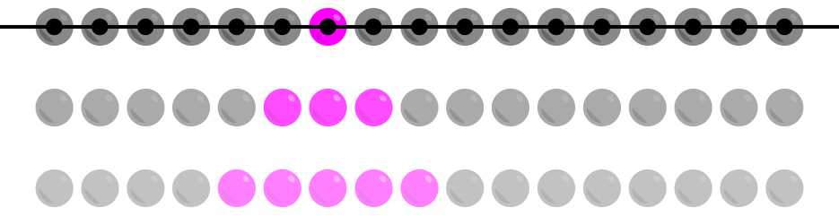
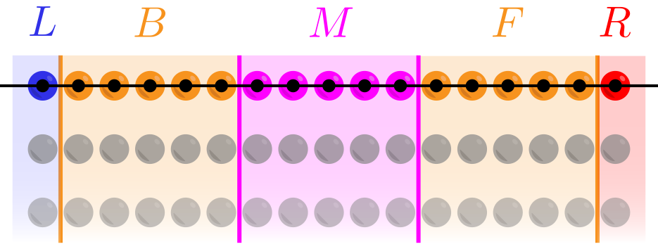
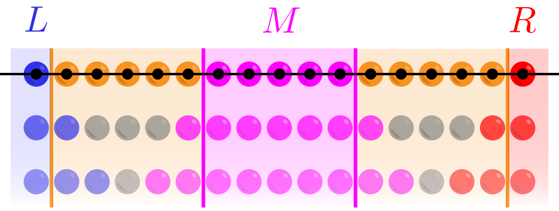
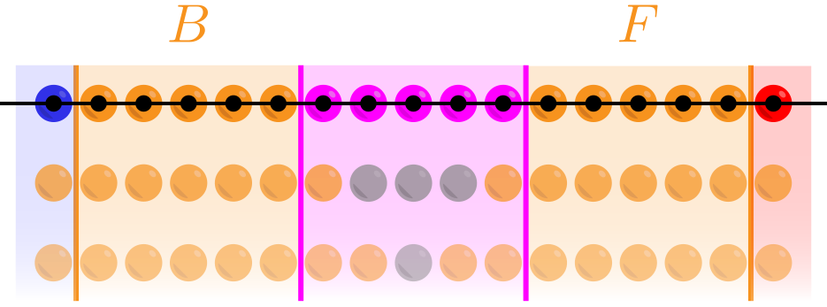

My research interests are in the field of quantum computing. Recently, I have worked on classically simulating constant-depth quantum circuits. I am broadly interested in the application of pure mathematics to quantum information.
Click on the images below to learn more about some projects I've recently worked on.

Constant-depth Quantum Circuits

Network-coupled Reservoir Computing
Reservoir Computing for Oscillatory Systems
Publications
Articles
Nolan J. Coble and Matthew Coudron. Quasi-polynomial Time Approximation of Output Probabilities of Constant-depth, Geometrically-local Quantum Circuits, Preprint, 2020. [pdf]
or [arXiv:2012.05460]
Nolan J. Coble and Ning Yu. A Reservoir Computing Scheme for Multi-class Classification, 2020 ACM Southeast Conference, Tampa, FL, 2020. [pdf]
or [doi:10.1145/3374135.3385265]
Miscellaneous
Undergradute Honors Thesis: Spectral Properties of Quaternionic Unit Gain Cycles, Advisor: Dr. Nathan Reff (SUNY Brockport). [pdf]
or
[SUNY Brockport Digital Commons]
Presentation: Developing a Parallel Machine Learning Approach for Network Predictions, presented to SUNY Brockport physics department, May 2020. [pdf]
Poster: Predicting Oscillatory Systems with Machine Learning, presented at SUNY Brockport Scholars Day, May 2020. [pdf]
or
[SUNY Brockport Digital Commons]
Poster: Parallel Machine Learning Prediction of Network Dynamics, presented at TREND REU Research Fair, College Park, MD, August 2019. [pdf]
Poster: Finite-Element Modeling of Waveguide Structures Using COMSOL Multiphysics, presented at Kearns Center Summer Symposium at the University of Rochester, August 2018
Research Experience
Training and Research Experiences in Nonlinear Dynamics REU at the University of Maryland, College Park, Predicting Network Dynamics with a Parallel Machine Learning Approach, advised by Dr. Michelle Girvan, Dr. Ed Ott, and Dr. Thomas Antonsen, Summer 2019
Honors Thesis Research, Spectral properties of quaternionic unit gain cycles, advised by Dr. Nathan Reff, 2020.
Photonics REU at the University of Rochester, Finite-Element Modeling of Waveguide Structures Using COMSOL Multiphysics, advised by Dr. Benjamin Miller, Summer 2018
Contact Me
Feel free to contact me about anything! The best way to reach me is through my email below.
Matthew Coudron and I recently demonstrated a quasi-polynomial time classical algorithm that approximates the output weights for a 3D geometrically-local, constant-depth quantum circuit to inverse polynomial error. That is, given a 3D lattice of \(n\) qubits, suppose \(C\) is quantum circuit with the following properites: (1) it consists of only \(1\) and \(2\) qubit gates, (2) the \(2\) qubit gates can only act on adjacent qubits of the lattice, and (3) its depth, \(d\), (i.e. the number of sequential layers of the circuit) is a constant that does not depend on the number of qubits in the lattice. In this case, the divide-and-conquer algorithm described in [1] will compute the quantity
$$ |\bra{x}C\ket{0^{\otimes n}}|^2 $$
for any bit-string \(x\in \{0,1\}^n\) to inverse polynomial error.
A complete description of the algorithm is rather lengthy, so instead I will describe here the key idea behind the division step of the algorithm for a 1D quantum circuit, \(C\). The following arguments will be at a high level and may not be mathematically accurate. See reference [1] for technical explanations.
The image below shows a 2D description of \(C\). The \(x\) dimension represents the 1D lattice of qubits, and the \(y\) dimension represents subsequent layers of the circuit. Since \(C\) is a constant-depth circuit, the \(y\) dimension will be a constant size independent of the number of qubits.

One key concept for the division step is that of a lightcone. The lightcone of qubit \(i\) is shown in the above image; i.e. the magenta colored qubits are said to be in the lightcone of qubit \(i\). Naïvely, gates acting on two disjoint lightcones will have no effect on each other in the circuit \(C\). We will exploit this fact to effectively divide our circuit on \(n\) qubits into disjoint circuits on \(O(n/2)\) qubits.
Since the depth of \(C\) is constant, the lightcones of a constant number of qubits will also have a constant size. We will define a slice on the qubits as shown below.

A slice consists of three constant-width regions, \(B,M,\) and \(F\). The region to the left (resp. right) of the slice will be denoted as \(L\) (resp. \(R\)). Since the lightcones of these regions all have constant width, we will choose the widths of \(B,M\) and \(F\) so that the following are true:

(1) The lightcones of \(L,M,\) and \(R\) are all disjoint. That is, there are no gates of \(C\) that act concurrently on more than one of \(L,M,\) and \(R\). We define \(C_{B\cup M\cup}\) to be the circuit consisting of all gates from \(C\) that act on the lightcone of \(C\). We define \(C_L\) and \(C_R\) analogously.

(2) Similarly, the lightcones of \(B\) and \(F\) are disjoint.
As can be seen in the preceeding images, if we choose the widths of \(B,M\) and \(F\) to be each greater than \(2d+1\), then the two conditions above will be true. With these choices, we note that \(C_{B\cup M\cup F}, C_L,\) and \(C_R\) are all disjoint with each other.
It turns out that our desired quantity \( \bra{0^{\otimes n}}C\ket{0^{\otimes n}} \) can be approximated up to \(O\big(\log(n)/n\big)\) error as
$$\lambda\cdot\Big( \bra{0_{L\cup B}}C_L\ket{0_L}\otimes\ket{v_B}\Big)\cdot\Big(\bra{0_{R\cup F}} C_R\ket{0_R}\otimes\ket{w_F}\Big) $$
where \(\lambda\) is a scalar produced by the circuit \(C_{B\cup M\cup F}\), \(\ket{v_B}\) and \(\ket{w_F}\) are states produced by \(C_{B\cup M\cup F}\), and the \(O\big(\log(n)/n\big)\) is an error term produced by taking a Schmidt decomposition across \(M\). There are two important features of this approximation.
(1) Since the width of \({B\cup M\cup F}\) is dependent on the constant depth, \(d\), of \(C\), the width of \(C_{B\cup M\cup F}\) is also constant. Constant-depth and constant-width circuits can been classically dealt with rather easily.
(2) If we choose the slice \(B\cup M\cup F\) to be in the middle of the chain of qubits, then \(C_L\) and \(C_R\) are disjoint quantum circuits acting on approximately \(n/2\) qubits.
We can combine these two features to develop a divide-and-conquer algorithm for our task: at each step we cut the qubits down the middle, and recurse on the two smaller circuits. We will only need \(O(\log(n))\) recursive steps to approximate the output weights for \(C\). The catch of this procedure is that the \(O\big(\log(n)/n\big)\) error term is too large to be able to achieve inverse polynomial error for the entire divide-and-conquer algorithm. It turns out that a more complicated inclusion-exclusion style argument involving \(\Omega(n)\) slices is necessary to achieve an inverse polynomial error, as described in [1].
Parallel Reservoir Computing Scheme for Predicting Network-Coupled Dynamical Systems
Page is currently under construction.
Predicting Oscillatory Physical Systems with Reservoir Computing